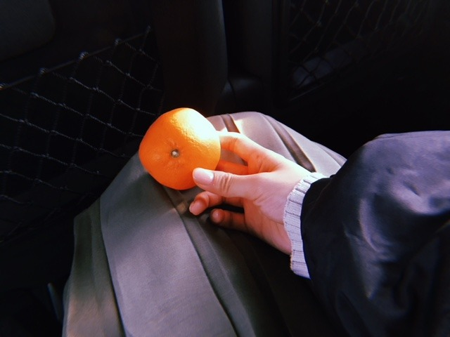
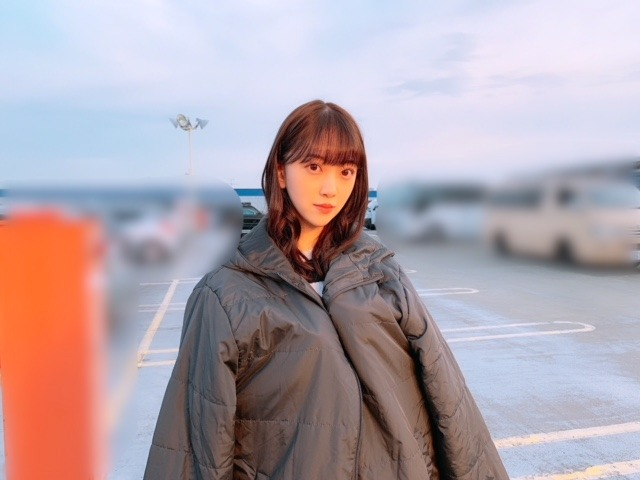

2018/1221Fri甘酸っぱいものとは青春とみかんと金柑と
ジブリ作品が昔から大好きなのですが
"海がきこえる"
密かにすきな作品の1つです
切なくもありもどかしくもあり
あの青々しさと全体的な爽やかさがたまりません
私が思う青春そのものです
青春にファンタジーを足した作品が
耳をすませばだとしたら、
海がきこえるは純青春！
そしてちょっぴり大人で
懐かしさもあるあの感じが良きです
よく見返します
少女の想い
ファーストインプレッションなど
BGMも素敵
いつか 海がきこえる をイメージして
駅や海辺やカフェでの撮影とかしてみたいなぁ

みかんに光が当たるようにしたら
その部分が凹んでみえました
光が強すぎる...でも太陽光だし...
夕日だから強かったのかな


最近は、みかんを食べる機会が増えて
さらに 金柑もよく食べています
皮まるごと食べるのが美味しくて
ぱくぱく食べちゃいます
そして
今日はmステに出させていただきます☺︎

朝、楽屋に入ったら
クリスマス仕様のゴーちゃんが！！
かわいいブイ！！
シンクロニシティと
気づいたら片想いを披露させていただきます
最後まで観てね☺︎
では！

2018/12/21 11:00
コメント(319)
未央奈 こんにちは！
「海がきこえる」懐かしいね。
ぼんやりと青春もので、吉祥寺と高知 ってイメージ。
気になってきちゃたよ。もう一度ちゃんと見るね。
高知に行きたい理由って「海がきこえる」なのかな？
あと、深大寺そばを食べたら近くに神代植物公園に行ってみて。バラが有名な場所。オススメです！
Mステ 楽しみすぎます！
頑張ろうね！楽しもうね！どんな未央奈も未央奈。
未央奈は未央奈のままで、
最高の笑顔を！
「海がきこえる」懐かしいね。
ぼんやりと青春もので、吉祥寺と高知 ってイメージ。
気になってきちゃたよ。もう一度ちゃんと見るね。
高知に行きたい理由って「海がきこえる」なのかな？
あと、深大寺そばを食べたら近くに神代植物公園に行ってみて。バラが有名な場所。オススメです！
Mステ 楽しみすぎます！
頑張ろうね！楽しもうね！どんな未央奈も未央奈。
未央奈は未央奈のままで、
最高の笑顔を！
未央奈ブログ更新ありがとう！！
今日のMステ楽しみにしてるよーー！！
全部見るよーーーー！！
気づいたら片想いは久しぶりに見るけど、なぁちゃん最後のMステだから一緒に頑張ってね！！！いい思い出を！！
もちろんシンクロニシティもね！！
またブログ更新する時を楽しみにしてるよーーー！！
ではまた
今日のMステ楽しみにしてるよーー！！
全部見るよーーーー！！
気づいたら片想いは久しぶりに見るけど、なぁちゃん最後のMステだから一緒に頑張ってね！！！いい思い出を！！
もちろんシンクロニシティもね！！
またブログ更新する時を楽しみにしてるよーーー！！
ではまた
この年末にでんじろうさんから
注意事項が発表されました。
「ミカンは１日３個まで」
愕然としました。
４個目から罪悪感が生まれるように…
…そうです。
結局たくさん食べてます 笑
今更です 急には無理だー
と、黄色い手でスマホを握りながら
うそぶく今日です
注意事項が発表されました。
「ミカンは１日３個まで」
愕然としました。
４個目から罪悪感が生まれるように…
…そうです。
結局たくさん食べてます 笑
今更です 急には無理だー
と、黄色い手でスマホを握りながら
うそぶく今日です
では。
もちろん観るよ!
みおなも可愛いブイ！
堀ちゃん、お疲れ様
ジブリは「紅の豚」が好きで、もう何十回も観てる 大人の恋愛だよね
大人の恋愛だよね 主人公がたまらなくカッコいい
主人公がたまらなくカッコいい
Mステ、2曲披露するんだ 楽しみにしてるね
楽しみにしてるね
ジブリは「紅の豚」が好きで、もう何十回も観てる
Mステ、2曲披露するんだ
未央奈〜こんにちは〜 耳をすませばは大好きだから何回も観たことあるけど海がきこえるはまだ観たことがないので今度観てみようと思います〜
耳をすませばは大好きだから何回も観たことあるけど海がきこえるはまだ観たことがないので今度観てみようと思います〜
 この時期に食べるみかんは本当に美味しいよね〜
この時期に食べるみかんは本当に美味しいよね〜 金柑も美味しいけど未央奈は皮ごと食べるんだね〜
金柑も美味しいけど未央奈は皮ごと食べるんだね〜
 今度私もそうしてみようかな〜今日のMステ楽しみにしてるよ〜
今度私もそうしてみようかな〜今日のMステ楽しみにしてるよ〜 シンクロニシティに気づいたら片想い神曲２曲本当に嬉しいしドキドキワクワクして楽しみだな〜今回も未央奈のメッチャ可愛い写真ありがとう〜スッゴク嬉しいよ〜
シンクロニシティに気づいたら片想い神曲２曲本当に嬉しいしドキドキワクワクして楽しみだな〜今回も未央奈のメッチャ可愛い写真ありがとう〜スッゴク嬉しいよ〜 未央奈〜大好き〜
未央奈〜大好き〜
スゴいドキドキする。理由は、美しさもあるけど、堀ちゃんの独特の空気感が、凄く魅力的に感じます。とても、素敵な堀ちゃん。Mステ観ますよ。シンクロニシティ、大好きです。応援しているから、頑張ってね。
ブログ更新ありがとう！可愛い写真も沢山ありがとう！
「海がきこえる」高知が舞台のお話なんだね。小さい頃 少しだけ住んでいたので、親近感が湧きました。学生時代の青春が詰め込まれた作品って感じを映像から感じたので、DVDとか借りて見てみたいなぁと思いました！
ジブリの絵のタッチとか音楽とか大好きです。
「君をのせて」を伴奏で弾いたり、「借りぐらしのアリエッティ」のストーリーを意識してショパンのエチュード25-1を弾いたことがあって、個人的にジブリ作品には思い入れもあって…
ジブリは家族と見ることが多くて、作品と一緒に家族との思い出が上乗せされて、素敵な記憶になっています︎☺︎
話が変わりますが、冬のみかん美味しいよね！笑
駅伝終わりにみかんの詰め放題に参加して、沢山家にあったんだけど、今朝なくなりました…みかんロスです(;_;)笑
金柑は昔おばあちゃんの家のお庭に木があって、食べたり泥のケーキの飾り付けに使ったりしていました︎☺︎懐かしい…
Mステ頑張ってください！
「気づいたら片想い」も「シンクロニシティ」も大好きな曲なので、楽しみです⸜(*ˊᵕˋ*)⸝
「海がきこえる」高知が舞台のお話なんだね。小さい頃 少しだけ住んでいたので、親近感が湧きました。学生時代の青春が詰め込まれた作品って感じを映像から感じたので、DVDとか借りて見てみたいなぁと思いました！
ジブリの絵のタッチとか音楽とか大好きです。
「君をのせて」を伴奏で弾いたり、「借りぐらしのアリエッティ」のストーリーを意識してショパンのエチュード25-1を弾いたことがあって、個人的にジブリ作品には思い入れもあって…
ジブリは家族と見ることが多くて、作品と一緒に家族との思い出が上乗せされて、素敵な記憶になっています︎☺︎
話が変わりますが、冬のみかん美味しいよね！笑
駅伝終わりにみかんの詰め放題に参加して、沢山家にあったんだけど、今朝なくなりました…みかんロスです(;_;)笑
金柑は昔おばあちゃんの家のお庭に木があって、食べたり泥のケーキの飾り付けに使ったりしていました︎☺︎懐かしい…
Mステ頑張ってください！
「気づいたら片想い」も「シンクロニシティ」も大好きな曲なので、楽しみです⸜(*ˊᵕˋ*)⸝
こんにちは
みかんが美味しい季節になりました♪
柑橘類のビタミンは体に良いし、
ジブリ作品は心にとって良いですね☆
写真の顔色もみかん色になっていて、
まるでジブリ作品の主人公みたいです♡
そう！ペンライトの色もみかん色です✴
そして、今日のMステとても楽しみです！
ゴーちゃんサンタも可愛いらしいブイ！！
みおちゃんからはとっても気品を感じるし、
とっても多くのファンの力にもなってます♡
本当に素晴らしい青春ですよ☺
みかんが美味しい季節になりました♪
柑橘類のビタミンは体に良いし、
ジブリ作品は心にとって良いですね☆
写真の顔色もみかん色になっていて、
まるでジブリ作品の主人公みたいです♡
そう！ペンライトの色もみかん色です✴
そして、今日のMステとても楽しみです！
ゴーちゃんサンタも可愛いらしいブイ！！
みおちゃんからはとっても気品を感じるし、
とっても多くのファンの力にもなってます♡
本当に素晴らしい青春ですよ☺
みかんは紅まどんなが美味しいですよー
食べてみてくださーい
食べてみてくださーい
ブログ更新ありがとう！
絶対見る
大好き
絶対見る
大好き
ブログ更新ありがとう
Mステ見るよ
体調気をつけてね
まいやんセンター曲となーちゃんセンター曲だね
Mステ見るよ
体調気をつけてね
まいやんセンター曲となーちゃんセンター曲だね
未央奈ー、ブログ更新ありがとう！
Mステめっちゃ楽しみ！
未央奈の言った海がきこえるっていうジブリの作品みてみる！
これからも頑張って！！
Mステめっちゃ楽しみ！
未央奈の言った海がきこえるっていうジブリの作品みてみる！
これからも頑張って！！
おしゃれ過ぎてまぶしいですね！
ロングだと大人ぽく見える！
大みそかは、あの国民番組を見ますね。。
ロングだと大人ぽく見える！
大みそかは、あの国民番組を見ますね。。
Mステ楽しみにしてます
やっぱりロング可愛い！
やっぱりロング可愛い！
こんばんは
「海がきこえる」は舞台が高知ということもありよくみてます。
他のジブリ作品と違いなかなかテレビ放映されない異色作だよね。
今夜のMステ楽しみです。
因みに僕もみかん毎日食べてるよ。
「海がきこえる」は舞台が高知ということもありよくみてます。
他のジブリ作品と違いなかなかテレビ放映されない異色作だよね。
今夜のMステ楽しみです。
因みに僕もみかん毎日食べてるよ。
楽しみだなーー ウィンク期待^^笑
更新ありがとうございます！
最新曲だけではなく、気づいたら片想いも披露してくれるなんて最高です！
レコ大も応援してます！2連覇しちゃってください！
3月の名古屋の全握、たのしみにしてます！
最新曲だけではなく、気づいたら片想いも披露してくれるなんて最高です！
レコ大も応援してます！2連覇しちゃってください！
3月の名古屋の全握、たのしみにしてます！
未央奈～～更新ありがとう。
未央奈～～映画、ドラマそしてまた新しくドラマが決まったね今回のはゲスト出演？ではなく主要人物としての出演だったっけおめでとうそれと映画の公開日も決まったね6月２８日だっけ今から楽しみ～～でもその前にドラマだね！未央奈がどんな演技をしたのか楽しみ～～
それと前に一つ言い過ぎたのがあったからそれについてはごめんなさい！言い過ぎました！この場をお借りして謝罪させて頂きます。（多分１０月とかにブログのコメントで書いた奴）以後気おつけますこの度は誠に申し訳ございませんでした。
話は変わって今日のｍステ楽しみにしているね。！そして２３日も別の番組出るよねそっちも楽しみ！どんどん年末になって来たね！忙しいと思うけど体調に気おつけて頑張って！陰ながら応援しています。
では、今日も可愛い写真ありがとね又惚れ直しそうやばい！！
未央奈～～映画、ドラマそしてまた新しくドラマが決まったね今回のはゲスト出演？ではなく主要人物としての出演だったっけおめでとうそれと映画の公開日も決まったね6月２８日だっけ今から楽しみ～～
それと前に一つ言い過ぎたのがあったからそれについてはごめんなさい！言い過ぎました！この場をお借りして謝罪させて頂きます。（多分１０月とかにブログのコメントで書いた奴）以後気おつけますこの度は誠に申し訳ございませんでした。
話は変わって今日のｍステ楽しみにしているね。！そして２３日も別の番組出るよねそっちも楽しみ！どんどん年末になって来たね！忙しいと思うけど体調に気おつけて頑張って！陰ながら応援しています。
では、今日も可愛い写真ありがとね又惚れ直しそう
ほんとすき！！
ウィンクに期待！
ウィンクに期待！
Mステ絶対見ます～
みかん僕も大好きです。
みかん僕も大好きです。
堀ちゃん、こんばんは。
「海がきこえる」観たことないです！
自分でもびっくりです。
ジブリ映画はよくテレビでやるので、ほとんど観たと思っていたのですが、まさかまさか。
今度観てみますね。
この原作、氷室冴子さんの小説ですよね？
なんか、むかーし、「多恵子ガール」「なぎさボーイ」読んだの思い出しました。
内容は全く覚えてないのですが、タイトルだけは何十年経っても覚えてる。すごい。
じゃーね！
「海がきこえる」観たことないです！
自分でもびっくりです。
ジブリ映画はよくテレビでやるので、ほとんど観たと思っていたのですが、まさかまさか。
今度観てみますね。
この原作、氷室冴子さんの小説ですよね？
なんか、むかーし、「多恵子ガール」「なぎさボーイ」読んだの思い出しました。
内容は全く覚えてないのですが、タイトルだけは何十年経っても覚えてる。すごい。
じゃーね！
Mステ待機中！
ふぁいと～
ふぁいと～
未央奈ブログ更新ありがとう！
僕は「海がきこえる」見たことないんだ。
今度見てみよう。
Mステ楽しみ！
僕は「海がきこえる」見たことないんだ。
今度見てみよう。
Mステ楽しみ！
最後まで観るぅーーーーーーー(・д・)q
楽しんでらっしゃい！
楽しんでらっしゃい！
堀ちゃんこんばんは。
私もジブリ作品大好きなんやけど、「海がきこえる」は見たことがなくて。
ずっと見たいと思ってるから、今度DVD借りるね！
ジブリの音楽も心を震わせるというか、作品とマッチしてるよね、私は、「あの夏へ」、「海の見える街」、「人生のメリーゴーランド」、「アシタカせっ記」が特に好きだなぁ。
他にもその日の気分によって、いろんな曲が聴きたくなるよね。
あー、いつか握手会で堀ちゃんとジブリ語りしたいな 笑
みかん皮ごと食べるの！？ すごい
冬ははっさくもおススメだよ〜
Mステ見ます！ 楽しみ！
堀ちゃんどっちの曲もフロントやから嬉しいな☺︎
頑張ってね！
では。
私もジブリ作品大好きなんやけど、「海がきこえる」は見たことがなくて。
ずっと見たいと思ってるから、今度DVD借りるね！
ジブリの音楽も心を震わせるというか、作品とマッチしてるよね、私は、「あの夏へ」、「海の見える街」、「人生のメリーゴーランド」、「アシタカせっ記」が特に好きだなぁ。
他にもその日の気分によって、いろんな曲が聴きたくなるよね。
あー、いつか握手会で堀ちゃんとジブリ語りしたいな 笑
みかん皮ごと食べるの！？ すごい
冬ははっさくもおススメだよ〜
Mステ見ます！ 楽しみ！
堀ちゃんどっちの曲もフロントやから嬉しいな☺︎
頑張ってね！
では。
Mステもうすぐですねー！
おぎゆかちゃんとは楽屋近いのかな？
オンタイムで観ますよー！☆
おぎゆかちゃんとは楽屋近いのかな？
オンタイムで観ますよー！☆
未央奈ちゃんこんばんは‼ありがとうございます‼頑張ります‼頑張って下さい！お仕事頑張って下さい。ありがとうございます！
未央奈Mステ楽しみだよ！可愛い
未央ちゃんみまーす
好きなのはわかりますが、何故に密かになんですか？
(^ー^)
(^ー^)
かわいいー
みおなーーー！
こんばんは。ブログ更新ありがとうございます。
青春か～。「青春とは人生の一時期を指すのではない。人の有り様を指すのだ。」という人がいますが、今年来日したポール・マッカートニーやローリングストーンズなど、70を超えてもROCKし続けているアーティストは、今も青春真っただ中だと思います。
我が家では毎日みかんを一個ずつ食べております。金柑はまだ食べていませんが、柚がなるので、焼き魚にしぼったりして食べています。
Mステ録画予約しましたー。
ではまた。
青春か～。「青春とは人生の一時期を指すのではない。人の有り様を指すのだ。」という人がいますが、今年来日したポール・マッカートニーやローリングストーンズなど、70を超えてもROCKし続けているアーティストは、今も青春真っただ中だと思います。
我が家では毎日みかんを一個ずつ食べております。金柑はまだ食べていませんが、柚がなるので、焼き魚にしぼったりして食べています。
Mステ録画予約しましたー。
ではまた。
Mステ見るねー
冬はやっぱりみかんだよね
食べ過ぎて黄色くならないでね
冬はやっぱりみかんだよね
食べ過ぎて黄色くならないでね
ブログ更新、有難う御座います。
Ⓜ️ステ 見てます❗
Ⓜ️ステ 見てます❗
来年の握手会楽しみにしてますよ
まじでロング可愛すぎてやばい
Mステみてるよー！楽しみ！
あいほ
Mステみてるよー！楽しみ！
あいほ
(((o(*ﾟ▽ﾟ*)o)))！！！ 気づいたら片想いも披露するのね(Mステ)
大阪での全国握手会 行くよ(๑˃̵ᴗ˂̵)(๑˃̵ᴗ˂̵)
大阪での全国握手会 行くよ(๑˃̵ᴗ˂̵)(๑˃̵ᴗ˂̵)
こんばんはお疲れさま。
ジブリは良いな！
楽しめるし色んな事を考えさせられたり。
中でも個人的には、魔女の宅急便。
と、やはりナウシカかな？
でも好きな作品は沢山や(笑)
みかん、美味しい季節になってきたね。
こたつにみかん。
金柑は蜂蜜漬けが美味しくて子供の頃から好きです。皮ごと美味しいね。
Mステは録画してるよ！
セミロング定着なん？
自分が好きなんが一番やしね！
俺はショートが好きです(笑)
年内も様々イベントあるやろうから体調には気をつけてくださいな。
ではではまたね！
ほなね、堀ちゃん！
頑張りや！
ジブリは良いな！
楽しめるし色んな事を考えさせられたり。
中でも個人的には、魔女の宅急便。
と、やはりナウシカかな？
でも好きな作品は沢山や(笑)
みかん、美味しい季節になってきたね。
こたつにみかん。
金柑は蜂蜜漬けが美味しくて子供の頃から好きです。皮ごと美味しいね。
Mステは録画してるよ！
セミロング定着なん？
自分が好きなんが一番やしね！
俺はショートが好きです(笑)
年内も様々イベントあるやろうから体調には気をつけてくださいな。
ではではまたね！
ほなね、堀ちゃん！
頑張りや！
ブログ更新ありがとうございます！
Mステ絶対見ます ⭐️
Mステ絶対見ます ⭐️
握手会行くからよろしくです。
海が聞こえる
レンタルした(^｡^)
まだ見れない
mステ見るね（＾ω＾）
レンタルした(^｡^)
まだ見れない
mステ見るね（＾ω＾）
ロング・ポニテ未央奈だったね〜！！
観るね〜！七瀬ちゃんの思い出の曲やるのねッ
衣装すっごい可愛かった（＾ω＾）
待ってま〜す
ばいぃ
見てますよ！楽しみです！
ポニテ良かったぁぁぁー！
楽しみにしてるねー


痩せたよね？顔とか脚とかほっそりしたなあって思う！
あとロングがほんとにほんとに可愛い
ずっとそのままでいて…
10月の握手会でロング未央奈見て、もう可愛すぎて顔ちっちゃすぎて、透明感半端なくて妖精さんみたいで消えちゃいそうで折れちゃいそうで…
茶髪でも黒髪でもどっちでも好きだけど、ふわふわロングでずっといてほしいな〜〜
ほんとに可愛い！！！！！